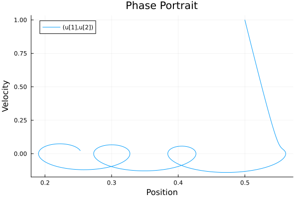
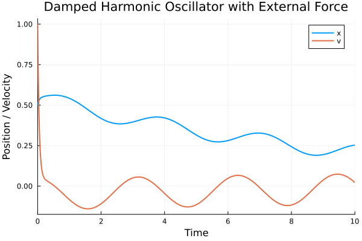
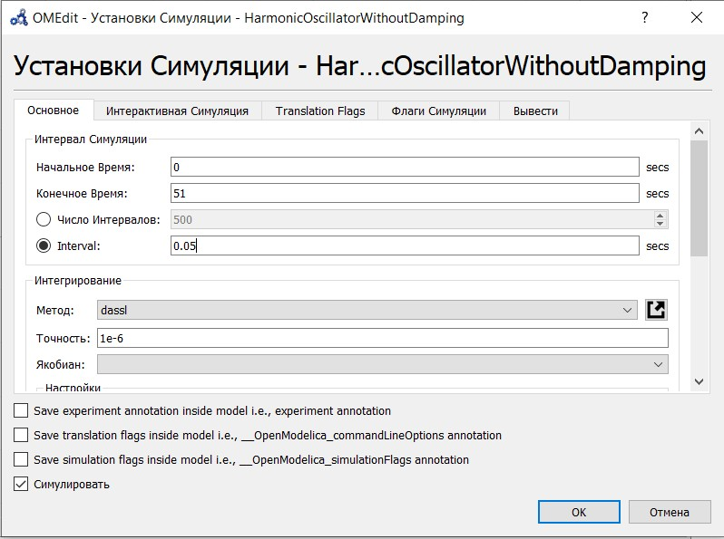
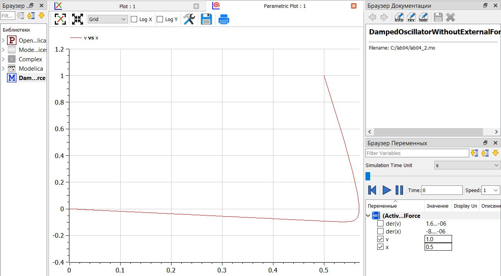
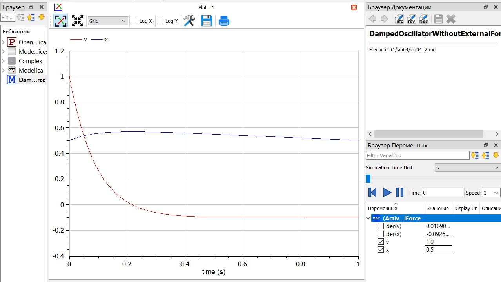
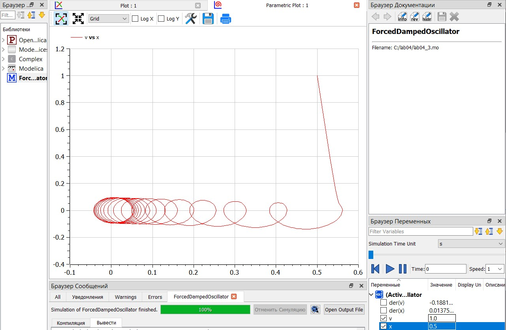
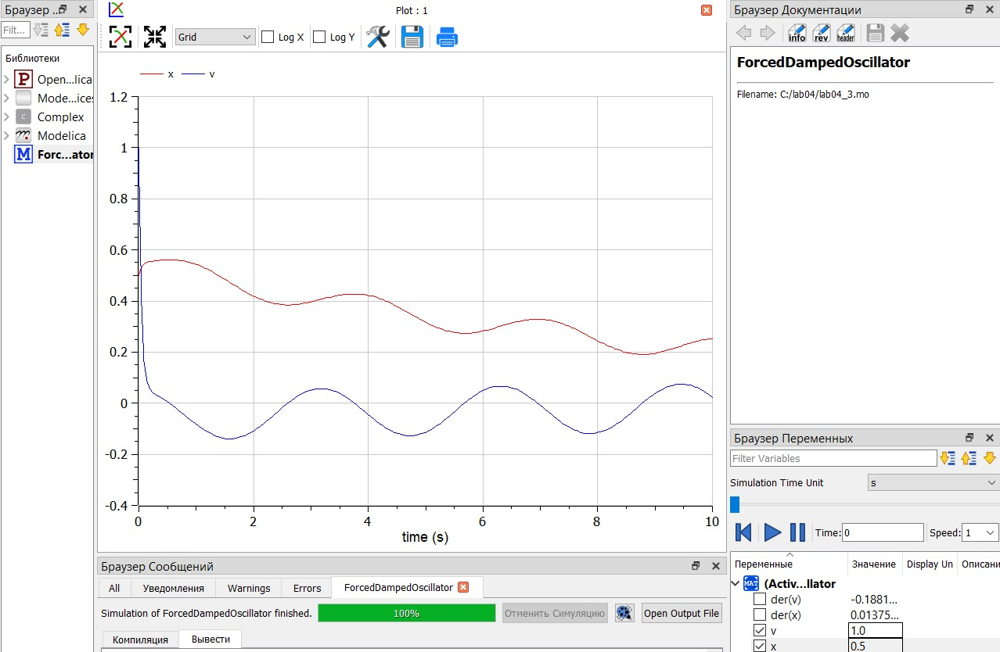

Построить модели гармонических колебаний, используя Julia и OpenModelica.
Фазовый портрет - это графическое представление динамики системы в фазовом пространстве, где каждое состояние системы представлено точкой. На графике обычно изображаются значения различных переменных системы в зависимости друг от друга. Фазовый портрет позволяет визуализировать поведение системы со временем и выявить основные характеристики ее динамики, такие как устойчивость, периодичность, предельные циклы и т. д. Фазовые портреты широко используются в различных науках, включая физику, математику, биологию и инженерные науки, для анализа и моделирования динамических систем [1].
Дифференциальные уравнения (ДУ) с правой частью равной нулю, или однородные дифференциальные уравнения, представляют собой уравнения, в которых отсутствует внешнее воздействие или источник изменений. Они описывают системы, в которых изменения зависят только от текущего состояния системы и ее параметров. Решение таких уравнений позволяет определить стационарные состояния системы и проанализировать ее устойчивость к возмущениям. Однородные дифференциальные уравнения широко применяются в различных областях науки и инженерии для моделирования и анализа различных процессов, таких как колебания, динамика систем управления, теплопроводность и диффузия веществ.
Дифференциальные уравнения с правой частью, зависящей от переменных или параметров системы, описывают динамику системы с учетом внешних воздействий или источников изменений. В таких уравнениях правая часть представляет собой функцию времени, переменных системы или других параметров, которая описывает воздействие на систему в каждый момент времени. Решение таких уравнений позволяет моделировать поведение системы в различных условиях и прогнозировать ее развитие во времени. Дифференциальные уравнения с переменной правой частью находят применение в широком спектре областей, включая физику, биологию, экономику, механику и другие науки, где они используются для анализа и моделирования различных процессов и явлений [2].
Вариант 17
Постройте фазовый портрет гармонического осциллятора и решение уравнения гармонического осциллятора для следующих случаев:
Колебания гармонического осциллятора без затуханий и без действий внешней силы: x″ + 12x = 0
Колебания гармонического осциллятора c затуханием и без действий внешней силы: x″ + 11x′ + 2x = 0
Колебания гармонического осциллятора c затуханием и под действием внешней силы: x″ + 11x′ + 2x = 2cos(2t)
На интервале t [0; 51] (шаг 0.05) с начальными условиями x0 = 0.5, y0 = 1.
Напишем код на Jilia для случая 1: колебания гармонического осциллятора без затуханий и без действий внешней силы.
using DifferentialEquations, Plots
function oscillator1!(du, u, p, t)
du[1] = u[2]
du[2] = -12*u[1]
u0 = [0.5, 1.0]
tspan = (0.0, 51.0)
prob1 = ODEProblem(oscillator1!, u0, tspan)
sol1 = solve(prob1, Tsit5(), reltol=1e-8, abstol=1e-8)
plot(sol, title = "Harmonic Oscillator without Damping", xlabel = "Time", ylabel = "Position/Velocity")
savefig("oscillator1_solution.png")Запустим код при помощи командной строки и получим два изображения: Cм. рис. 1, Cм. рис. 2
Напишем код на Jilia для случая 2: колебания гармонического осциллятора c затуханием и без действий внешней силы.
using DifferentialEquations, Plots
function oscillator2!(du, u, p, t)
du[1] = u[2]
du[2] = -2*u[1] - 11*u[2]
end
u0 = [0.5, 1.0]
tspan = (0.0, 5.0)
prob2 = ODEProblem(oscillator2!, u0, tspan)
sol2 = solve(prob2, Tsit5(), reltol=1e-8, abstol=1e-8)
plot(sol2, title="Damped Harmonic Oscillator without External Force", xlabel="Time", ylabel="Position / Velocity")
savefig("oscillator2_solution.png")
plot(sol2, vars=(1,2), title="Phase Portrait", xlabel="Position", ylabel="Velocity")
savefig("oscillator2_phase_portrait.png")Запустим код при помощи командной строки и получим два изображения: Cм. рис. 3, Cм. рис. 4
Напишем код на Jilia для случая 3: колебания гармонического осциллятора c затуханием и под действием внешней силы.
using DifferentialEquations, Plots
function forced_damped_oscillator!(dx, x, params, t)
dx[1] = x[2]
dx[2] = 2*cos(2*t) - 2*x[1] - 21*x[2]
end
x0 = [0.5, 1.0] # Начальные условия для смещения и скорости
tspan = (0.0, 10.0) # Диапазон времени
prob = ODEProblem(forced_damped_oscillator!, x0, tspan)
sol = solve(prob)Запустим код при помощи командной строки и получим два изображения: Cм. рис. 5, Cм. рис. 6
 ## 
Напишем код на OpenModelica для случая 1: колебания гармонического осциллятора без затуханий и без действий внешней силы.
model HarmonicOscillatorWithoutDamping
Real x(start = 0.5);
Real y(start = 1.0);
equation
der(x) = v;
der(v) = -12*x
end HarmonicOscillatorWithoutDamping;Запустим код при помощи кнопок “проверить модель” -> “установки симуляции” -> “симулировать”. Не забываем в найстройках указать заданные нам ачальные условияю Cм. рис. 7
 ## Нажимаем галочки x и v для отображения графиков: Cм. рис. 8, Cм. рис. 9
Напишем код для случая 2: колебания гармонического осциллятора c затуханием и без действий внешней силы.
model DampedOscillatorWithoutExternalForce
Real x(start=0.5);
Real v(start=1.0);
initial equation
equation
der(x) = v;
der(v) = -2*x - 11*v;
end DampedOscillatorWithoutExternalForce;Запустим код. Нажимаем галочки x и v для отображения графиков: Cм. рис. 10, Cм. рис. 11
 ##  ## Напишем код на OpenModelica для случая 3: колебания гармонического осциллятора c затуханием и под действием внешней силы. .
model ForcedDampedOscillator
Real x(start=0.5);
Real v(start=1.0);
equation
der(x) = v;
der(v) = 2*cos(2*time) - 2*x - 21*v;
end ForcedDampedOscillator;Запустим код. Нажимаем галочки x и v для отображения графиков: Cм. рис. 12, Cм. рис. 13
 ## 
Реализовали модели для гармонических колебаний. Построили графики фазовых портретов и решения дифференциальных уравнений.
[1] Фазовое пространство: https://ru.m.wikipedia.org/wiki/%D0%A4%D0%B0%D0%B7%D0%BE%D0%B2%D0%BE%D0%B5_%D0%BF%D1%80%D0%BE%D1%81%D1%82%D1%80%D0%B0%D0%BD%D1%81%D1%82%D0%B2%D0%BE
[2] Дифференциальные уравнения: https://ru.wikipedia.org/wiki/%D0%94%D0%B8%D1%84%D1%84%D0%B5%D1%80%D0%B5%D0%BD%D1%86%D0%B8%D0%B0%D0%BB%D1%8C%D0%BD%D0%BE%D0%B5_%D1%83%D1%80%D0%B0%D0%B2%D0%BD%D0%B5%D0%BD%D0%B8%D0%B5